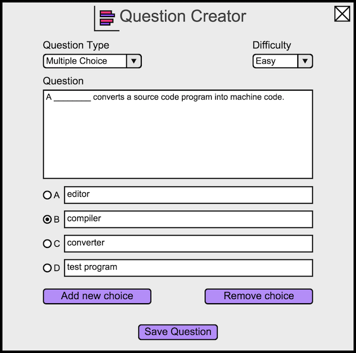
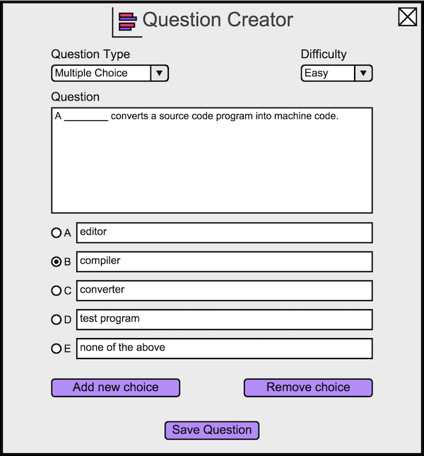

To create a multiple choice question, the instructor opens the question creator dialog. The Question Creator defaults to the Multiple Choice question type. The instructor sees Figure 1.
The instructor enters possible answers in the input fields next to the letters 'A', 'B', and so on. By default the correct choice is letter 'A'. To make the correct answer a different letter, the instructor selects the circle next to the corresponding letter.
An example of a filled in question is shown in Figure 4.

Figure 4: A question about converting source code into machine code.
An example of an inserted choice is shown in Figure 5.

Figure 5: A question about converting source code into machine code with five choices.